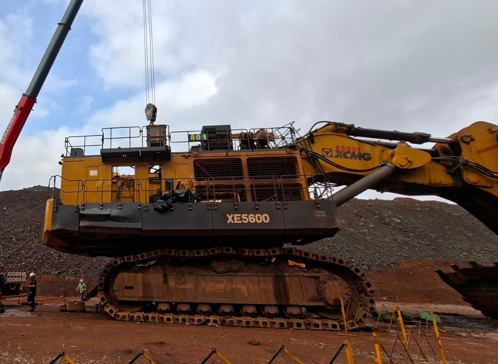
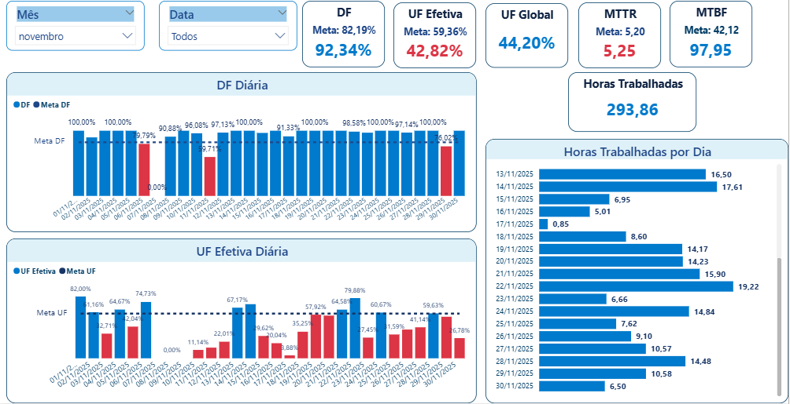
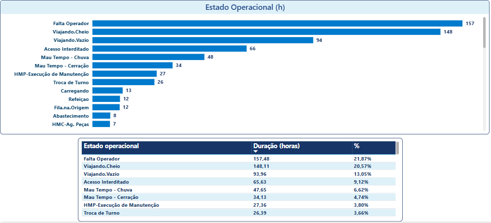

XE5600 - GESTÃO DE CRISE E RECUPERAÇÃO
XCMG Mobiliza Equipe Técnica para Recuperação da Escavadeira XE5600 Após Falha em Motor Diesel


A Escavadeira XCMG XE5600, em operação na Serra Norte (Carajás), enfrentou um desafio significativo em novembro, com a falha em um dos motores diesel impactando diretamente sua Disponibilidade Física (DF). Conforme o relatório de Evolução Mensal, o ativo registrou uma DF Acumulada de apenas 53,9% e uma DF Mensal crítica de 28,3% em novembro, exigindo uma resposta imediata e coordenada da Engenharia de Aplicação da XCMG.
A falha, classificada como "Manutenção corretiva – Falha no motor", desencadeou um plano de ação detalhado para a recuperação total do equipamento. O relatório de serviços executados, com atualização em 03 de dezembro de 2025, detalha as atividades em andamento, que incluem a substituição do coxim do PTO (LD), a avaliação do flange do espelho do motor através de revelador de trincas e a substituição da proteção superior do silencioso LE.
Apesar dos esforços, o cronograma de recuperação enfrentou desvios devido a condições climáticas adversas e a atrasos na liberação de apoio logístico, como o guindaste e a liberação de bloqueio pela Vale. A XCMG, no entanto, mantém o foco na conclusão dos serviços para que a XE5600, que possui um horímetro de 1218.9 horas, retorne à plena capacidade operacional o mais breve possível. A gestão transparente da crise e a mobilização de recursos técnicos reforçam o compromisso da XCMG em garantir a longevidade e a confiabilidade de seus ativos de grande porte.
XDE260 EM TESTE - DESEMPENHO SÓLIDO EM NOVEMBRO
XCMG XDE260 Demonstra Alta Confiabilidade em Teste na CSN Casa de Pedra, Superando Metas de Disponibilidade


O caminhão fora de estrada XDE260, em operação na CSN Casa de Pedra, apresentou um desempenho notável em confiabilidade durante o período de análise de novembro, conforme detalhado no relatório de Performance Operacional. O ativo superou a meta de Disponibilidade Física (DF), atingindo 92,34% contra uma meta de 82,19%, e demonstrou um excelente Tempo Médio Entre Falhas (MTBF) de 97,95 horas, superando a meta de 42,12 horas. Esses indicadores reforçam a robustez e a confiabilidade do equipamento em um ambiente de mineração de alta exigência.
Apesar da alta confiabilidade, a Utilização Efetiva (UF Efetiva) e a Utilização Global (UF Global) ficaram abaixo das metas, registrando 42,82% (meta de 59,36%) e 44,20%, respectivamente. A análise da distribuição de horas operacionais revela que o tempo de "Falta Operador" e "Viajando Cheio" foram os principais fatores que consumiram o tempo disponível, com 157,48 horas (21,87%) e 148,11 horas (20,57%) do total, respectivamente. Fatores externos como "Acesso Interditado" (65,63h) e "Mau Tempo - Chuva" (47,63h) também contribuíram significativamente para a redução da utilização.
Em relação ao consumo de combustível, o relatório aponta um Consumo Médio de Combustível de 136,90 L/h, com um volume total de 293,86 horas trabalhadas no período. A análise de manutenção indica que a maior parte das paradas foi para Manutenção Preventiva Sistemática (35 horas), seguida por Corretiva (18 horas) e Preventiva Não Sistemática (8 horas). O sistema funcional que mais demandou tempo de parada foi o "Não Classificado" (42,25 horas), seguido pelo "Motor Combustão" (15,43 horas), indicando a necessidade de aprimoramento na classificação das ocorrências para otimizar a gestão de ativos.
O monitoramento de pneus, essencial para a segurança e a eficiência, não apresentou anomalias críticas de pressão ou temperatura no período, com picos pontuais que foram rapidamente normalizados. O desempenho do XDE260 na CSN Casa de Pedra, com destaque para a confiabilidade e o baixo MTTR (5,25 horas contra meta de 5,20 horas), fornece dados valiosos para a XCMG e a CSN na busca contínua pela excelência operacional e na otimização da gestão de ativos de grande porte.
PERFORMANCE EM CAMPO
XG110 Supera Média da Frota em Produtividade e Consumo em Teste na Mina de Viga
Depois de passar por testes na Mina de Fábrica, o caminhão XG110 demonstrou um desempenho superior em indicadores-chave de eficiência durante o período de análise de novembro (11 a 30) na Mina de Viga. O relatório de Análise de Performance Operacional, que compara o ativo da XCMG com a média da frota de referência (775G), revela que o XG110 superou a média em Disponibilidade Física (DF), Tempo Médio Entre Falhas (MTBF), Produtividade e Consumo de Combustível, consolidando a competitividade do equipamento em condições reais de operação.
Os dados de performance mostram que o XG110 alcançou uma Produtividade de 126,9 t/h, superando a média da frota de 109,9 t/h. A eficiência no consumo de combustível é ainda mais notável, registrando 22,87 L/ht contra 41,27 L/ht da média. Em termos de confiabilidade, o XG110 apresentou uma DF de 84,0% e um MTBF de 55 horas, ambos acima da média da frota (70,3% e 46 horas, respectivamente). Entre os Pontos Positivos do período, destacam-se a liberação da operação assistida, a aderência à precisão da balança e o treinamento operacional realizado com a equipe do turno da noite.
Apesar do excelente desempenho em confiabilidade e eficiência, a Utilização Física (UF) e o Rendimento Operacional (RO) do XG110 ficaram abaixo da média (15,4% e 15,2%, respectivamente). Os comentários do relatório explicam que essa baixa utilização se deve a fatores como o processo inicial de ramp-up, a operação assistida, manutenções programadas e, principalmente, fatores externos como a falta de máquina de carga e de operador em dias específicos. O relatório também aponta a necessidade de ajuste no Payload de 75t para 70t, devido às características do local, e a correção e calibração do sistema de balança, que garantiu uma variação de carga média em +/-5% em relação ao caminhão de referência.
Os Pontos de Atenção identificados, como a operação em horário diurno, a manutenção inicial do sistema de balança e a falha no monitoramento de pneus, foram cruciais para o aprendizado e aprimoramento contínuo. A rápida atuação da engenharia da XCMG na correção do sistema de balança e a identificação da falha no sensor de pneu demonstram o compromisso em garantir a confiabilidade do ativo. O teste na Mina de Viga reforça a capacidade do XG110 de entregar alta produtividade e economia de combustível, posicionando-o como uma alternativa de alto valor agregado no mercado de mineração.